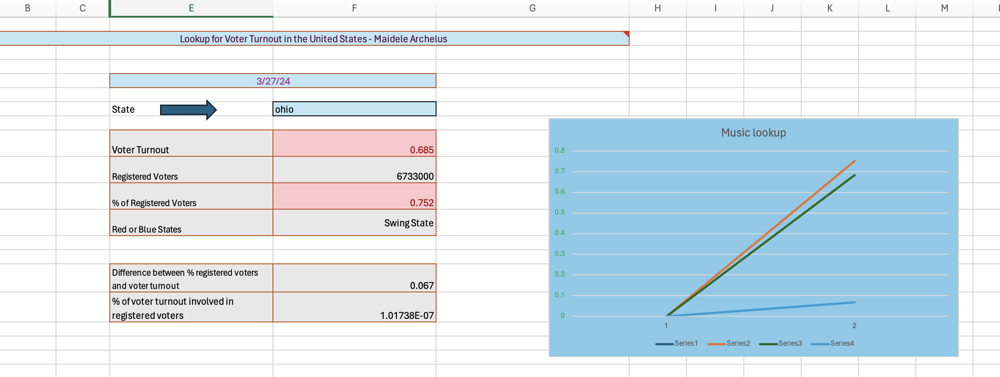
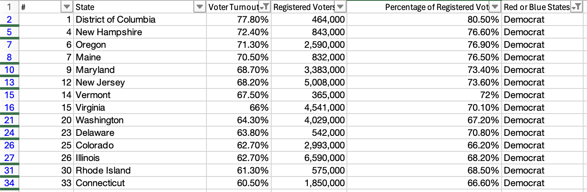

The purpose of this project was for the student to demonstrate the skills that they have learned from Excel. The student was prompted to conduct this project as if they were attending an interview and the interviewer had ask to present a workbook that exemplifies their excellence skills. I chose to display voter statistics in the United States of America. I incorporate my skills that make sense to my project as each filter and pivot table displayed something interesting.
The source that this project was based on is https://wisevoter.com/state-rankings/voter-turnout-by-state/. This website provided different statistic regarding voting in the United States. This project contains categories such as numbers, voter turnout, registered voters, red or blue states, and percentage of registered voters. The tabs that were used in this project are named: State Source, States, Lookup, Filter 1, Filter 2, Pivot 1, and Pivot 2. I chose to use the Lookup feature in this project so users could discover statistics on states based on each individual state.


I learned plenty of useful information from this Excel Project Learn. I learned how to make an Excel Project from my own research. The past excel projects, the data source was given to the students. However, on Excel Project three, the students had to find their own source from their own research. This taught me how to identify relevant data sources and apply them to the skills used in excel worksheets. This project reinforced all the skills that were applied such as wrapping, filtering, graphs, conditional formatting, etc. One issue that I came across in this project is that I had trouble remembering how to include a couple functions.